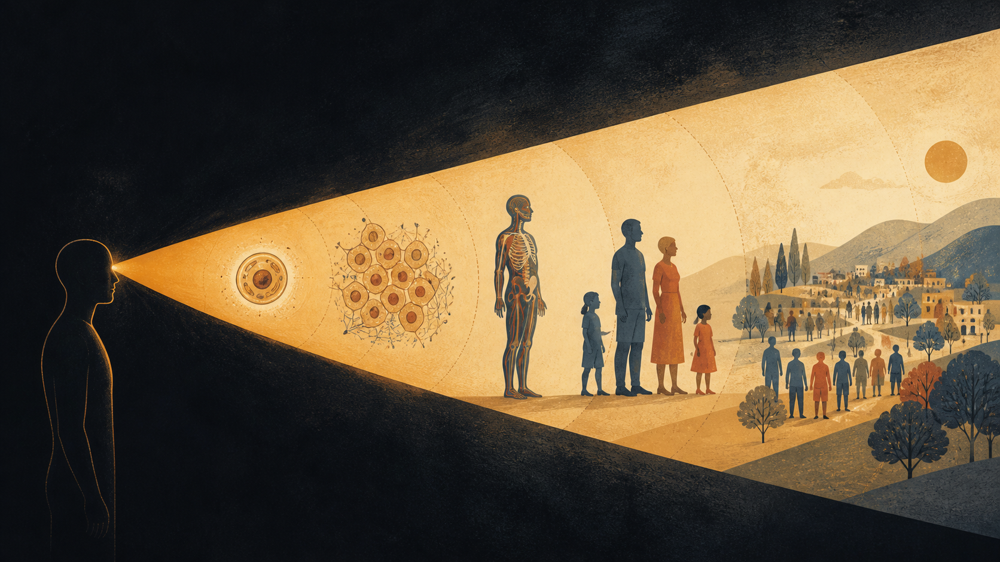
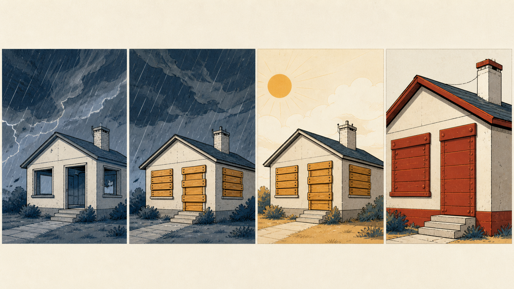

TAME · Patología multiescala
El quíntuple
y el cono cognitivo
Cinco preguntas para describir el problema que un sistema intenta resolver.
El caso inicial
La respuesta que frustra puede demostrar que la maquinaria funciona
Un sistema sin efectores no contrarregula: se queda donde lo dejaste.
La tesis
El sistema no falla solo por incompetencia.
Puede perder la capacidad de volver a plantearse el problema.
Una ciudad · un taxi · un destino
Todo problema se puede desarmar en cinco elementos
S · Estados
El mapa de todas las configuraciones físicamente posibles
La meta casi nunca es un punto: es un conjunto de estados que cuentan como “llegué”.
O · Operadores
Cada acción disponible tiene un costo w
“Difícil” no es lo mismo que “prohibido”. Una vía puede existir y resultar demasiado cara.
C · Restricciones
Las restricciones no son el enemigo.
Hacen que exista el problema.
Abrir una calle puede crear decenas de rutas. Enseñar un movimiento nuevo crea una sola.
E · Evaluación
Puede ejecutar perfectamente una meta equivocada
La contrarregulación revela qué estado considera correcto el sistema.
H · Horizonte
Anticipar no es virtud.
Es información que llega a tiempo.
Apaga el radio y el taxista no se vuelve torpe: pierde profundidad temporal.
El diccionario completo
Cinco preguntas, una sola gramática
Estado · operaciones · caminos · expectativa · horizonte
Dos naturalezas
La maquinaria se repone. La información se reescribe.
S · O — maquinaria
- estados y efectores
- se sustituyen o regeneran
- intervención costosa
C · E · H — información
- permisos, meta y anticipación
- se pueden recalibrar
- el sistema hace el trabajo
S → C · Trinquetes
La defensa fue correcta.
Después dejó de poder quitarse.
El estado empieza a fabricar las paredes de su propia cuenca.

El permiso apagado
Dos puertas cerradas pueden exigir tratamientos opuestos
Un efector dañado y un permiso ausente se ven iguales desde fuera.
C puede fallar en dos direcciones
Cerrar demasiado y abrir demasiado requieren respuestas opuestas
Rigidificación · C⁺
Se cierran caminos que deberían abrirse.
Respuesta: abrir rutas.
Debilitamiento · C⁻
Se pierden restricciones que organizaban al colectivo.
Respuesta: restaurar límites.
La pregunta pendiente
El quíntuple dice cómo está planteado el problema.
No dice de qué tamaño es el mundo del sistema.
Λ · Alcance
¿Hasta qué escala un desvío provoca acción?
La escala mayor a la que todavía responde es su Λ.
La figura central
El mundo de un sistema tiene forma de cono
Profundidad en el tiempo × alcance entre escalas.
Contracción
Puede perder tiempo, escala o ambos
Sigue siendo eficiente. Su problema se hizo pequeño.
Analogía · no afirmación clínica
La persona permanece. El mundo al que responde puede contraerse.
Una geometría · tres hipótesis de dominio
La función local puede persistir mientras desaparece la contribución al conjunto
Célula β
Desdiferenciación como δΛ.
Anticipación
Respuesta tardía como δH.
Colectivo celular
Pérdida de contexto como δΛ + C⁻.
Medición
La competencia no se deduce.
Se demuestra perturbando.
Λ: perturbar escalas.
H: buscar anticipación.
Φ: bloquear la ruta habitual.
Vector de fallo
“Progresó” no alcanza: hay seis maneras distintas de desregularse
contrarregulación · signo invertido
no responde a escalas superiores
pierde anticipación
la ventana se cierra
pierde organización
cae coordinación antes que cantidad
Jerarquía terapéutica del marco
La durabilidad aumenta cuando el sistema hace el trabajo
El eje no es potencia. Es acoplamiento con la señal.
Repliegue agencial
Un cono no se abre aumentando la potencia en el vértice
La hipótesis correcta es reconectar a una escala superior.
Refutación · no omitir
Tres resultados obligarían a abandonar piezas centrales del marco
Las condiciones de refutación no son un apéndice. Son parte del marco.
La objeción habitual
“Ya conocemos el mecanismo molecular”
Siempre hay mecanismo. La pregunta es qué nivel de descripción permite intervenir y predecir.
El cambio aplicable hoy
¿Qué le añado?
¿Qué le está cerrando el paso y qué caminos siguen abiertos?
Ejercicio · 3 minutos en parejas
Instancia un caso sin saltarte el orden
¿Qué variable o relación regresa activamente?
¿Defiende una magnitud o una relación?
¿Responde menos o no responde?
¿Hay un permiso contextual apagado?
¿El cono se acortó, se estrechó o ambos?
Las siete frases
01Todo problema tiene estados, operaciones, restricciones, evaluación y horizonte.
02C, E y H describen cómo el sistema plantea su problema.
03Cambiar restricciones transforma más rutas que añadir movimientos.
04No es una casa en ruinas: puede ser una casa tapiada.
05Un permiso apagado puede parecer un efector dañado.
06El cono cognitivo es alcance entre escalas × horizonte temporal.
07Un sistema puede seguir siendo eficiente mientras su problema se hace pequeño.
Estatuto
Una hipótesis bien definida vale más que una verdad imposible de refutar
La biología citada es evidencia. La integración es trabajo en desarrollo.